Cités universitaires – IUT de Bandjoun
Plateforme destinée aux nouveaux étudiants pour découvrir les cités proches de l’IUT. Présentation des cités avec photos, descriptions et contact direct de l’administrateur.
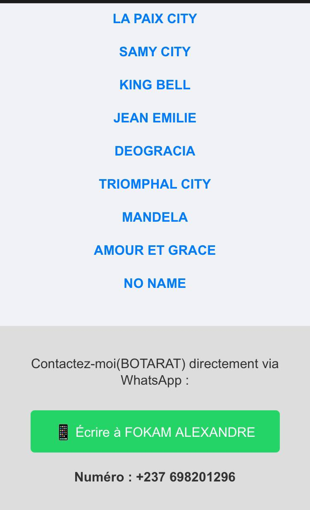
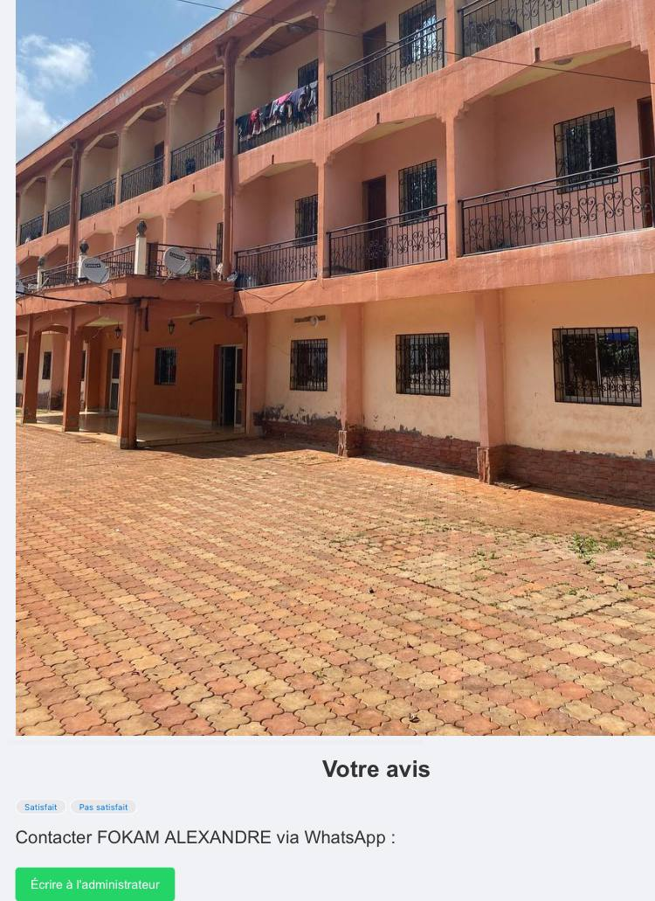
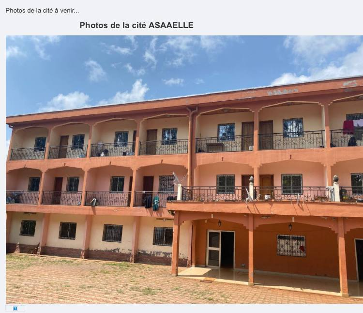
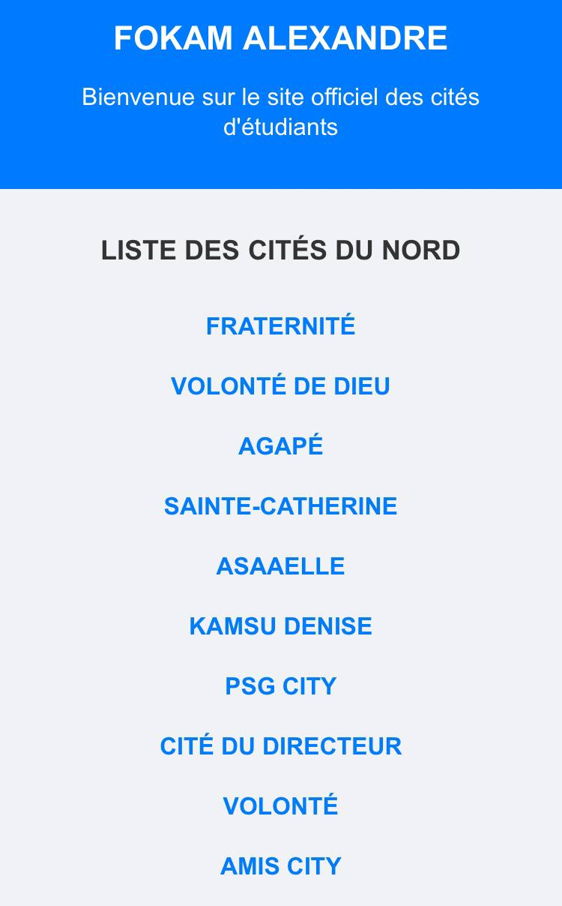
Voir le site
Fraterlink – Portail captif
Portail captif conçu pour la cité Fraternité, servant d’interface entre les utilisateurs et le routeur pour l’accès internet.
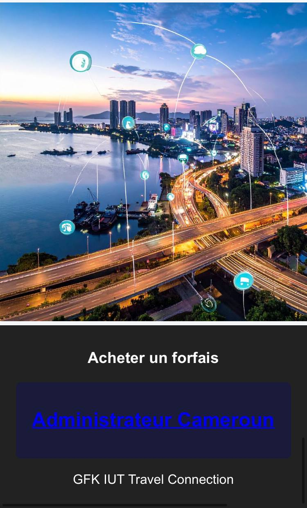
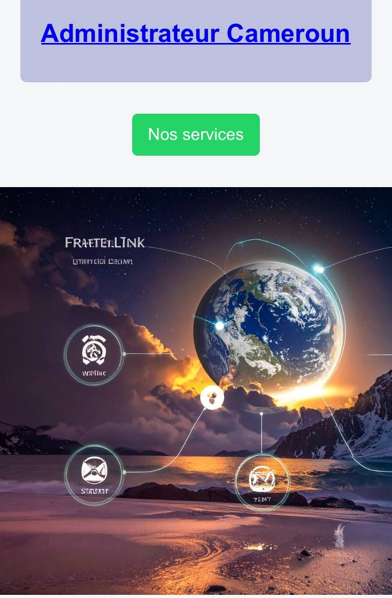
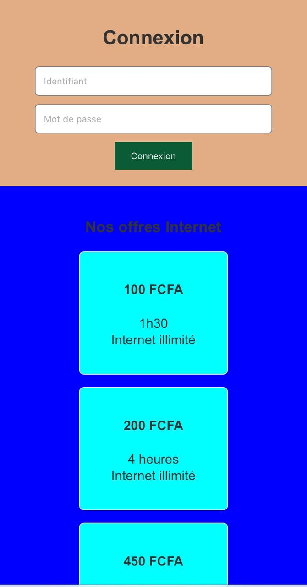
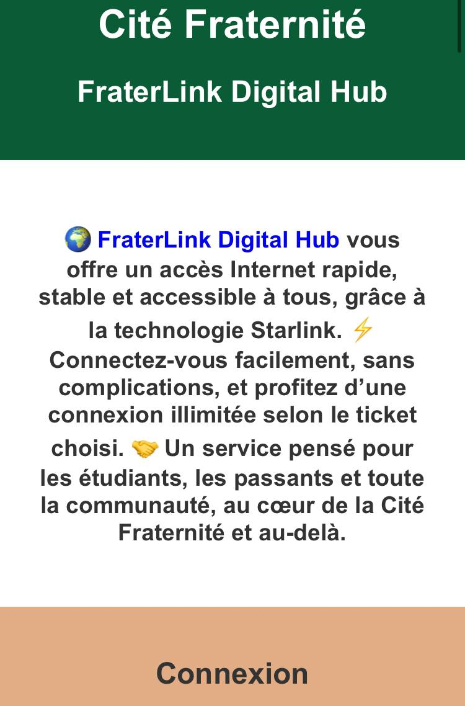
Voir le site
ZIBBI – Plateforme d’épargne en ligne
Application d’épargne en ligne avec dépôts, retraits et suivi de croissance journalière. Investissements en crypto, agriculture, immobilier et construction.
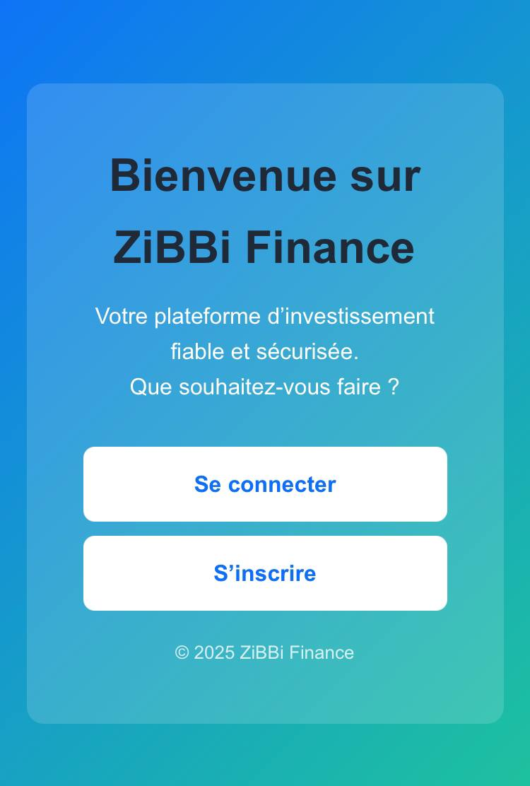
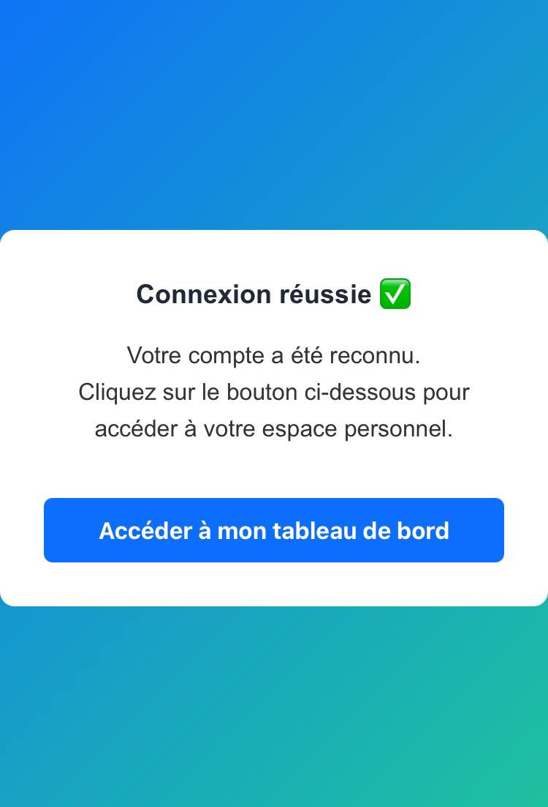
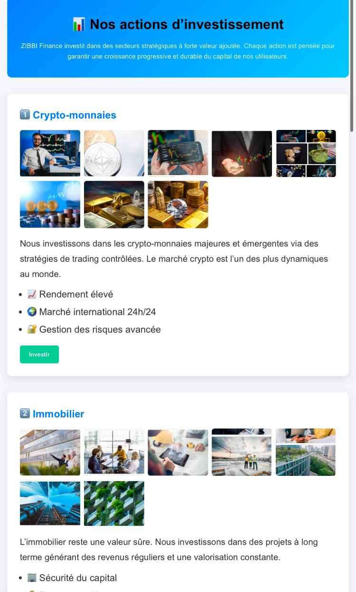

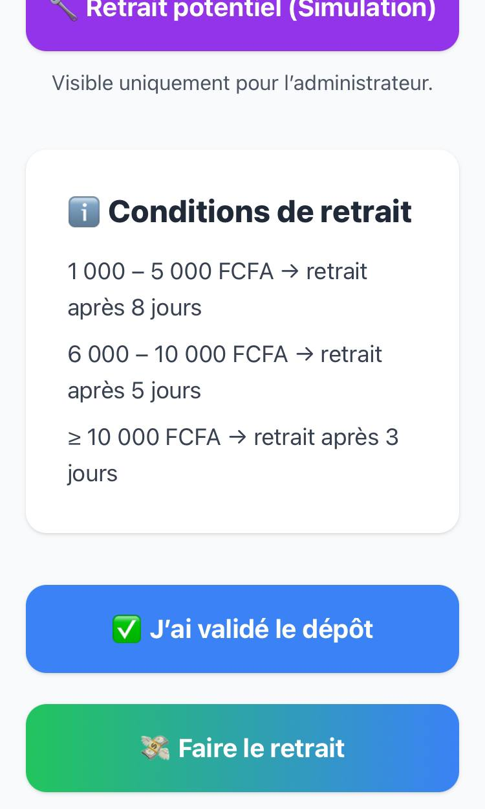
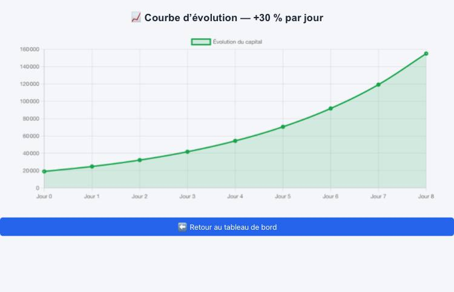
Voir le site
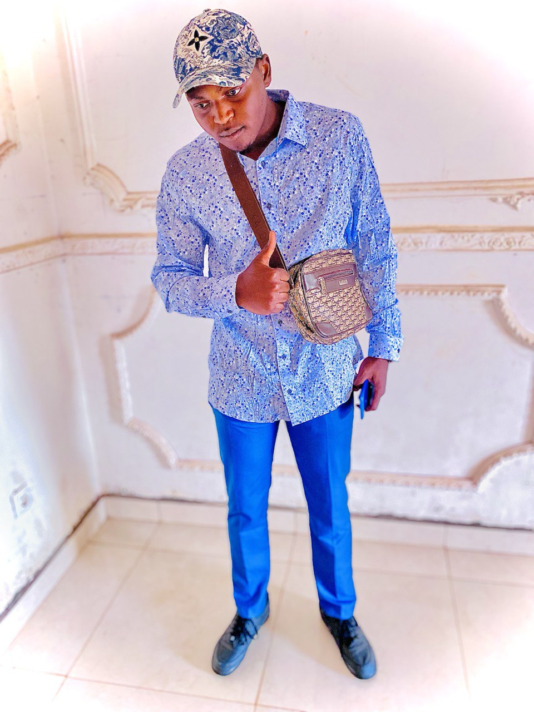